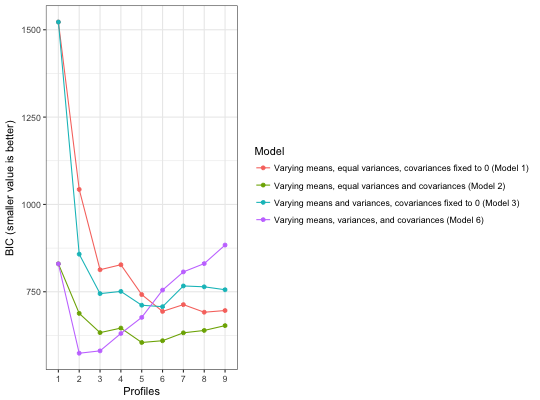

Explore BIC of mclust models
compare_solutions(df, ..., n_profiles_range = 1:9, model = c(1, 2, 3, 6), center_raw_data = FALSE, scale_raw_data = FALSE, statistic = "BIC", return_table = FALSE, prior_control = F)
| df | data.frame with two or more columns with continuous variables |
|---|---|
| ... | unquoted variable names separated by commas |
| n_profiles_range | a vector with the range of the number of mixture components to explore; defaults to 1 through 9 (1:9) |
| model | the mclust model to explore: 1 (varying means, equal variances, and residual covariances fixed to 0); 2 (varying means, equal variances and covariances; 3 (varying means and variances, covariances fixed to 0), 4 (varying means and covariances, equal variances; can only be specified in Mplus); 5 (varying means, equal variances, varying covariances); and 6 (varying means, variances, and covariances), in order least to most freely-estimated; see the introductory vignette for more information |
| center_raw_data | logical for whether to center (M = 1) the raw data (before clustering); defaults to FALSE |
| scale_raw_data | logical for whether to scale (SD = 1) the raw data (before clustering); defaults to FALSE |
| statistic | what statistic to plot; BIC or ICL are presently available as options |
| return_table | logical (TRUE or FALSE) for whether to return a table of the output instead of a plot; defaults to FALSE |
| prior_control | whether to include a regularizing prior; defaults to false |
a ggplot2 plot of the BIC values for the explored models
Explore the BIC values of a range of models in terms of a) the structure of the residual covariance matrix and b) the number of mixture components (or profiles)
compare_solutions(iris, Sepal.Length, Sepal.Width, Petal.Length, Petal.Width)